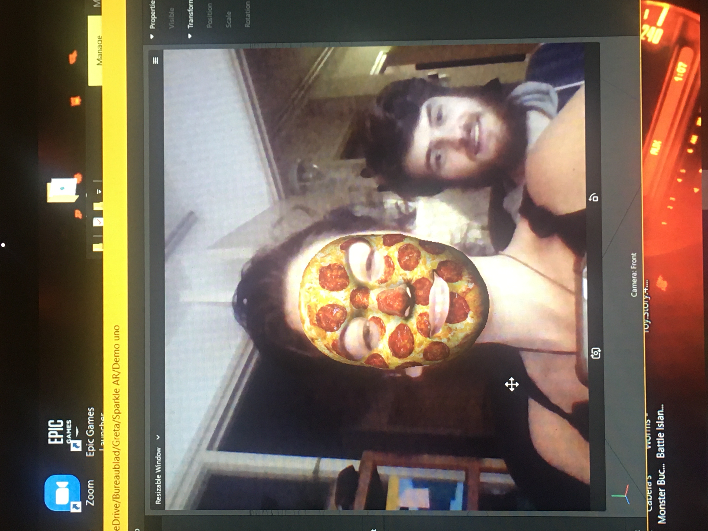
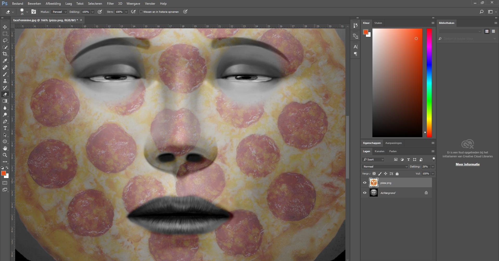
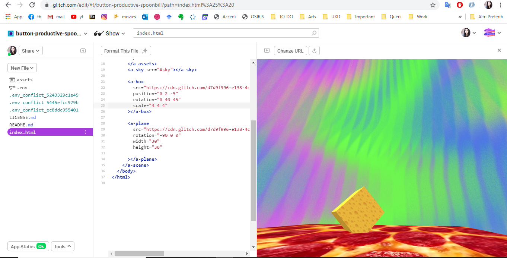
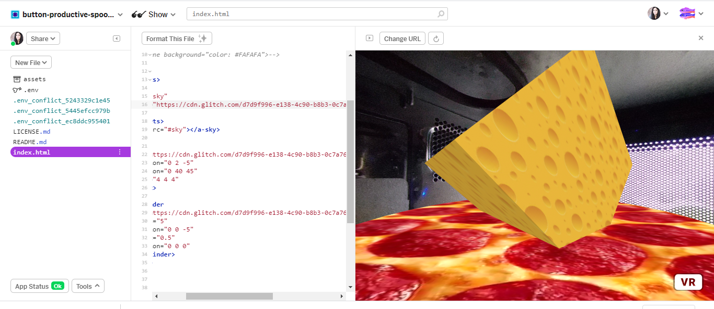
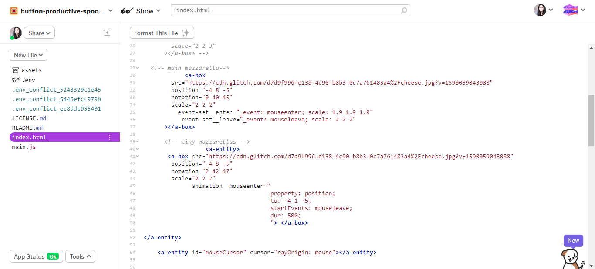
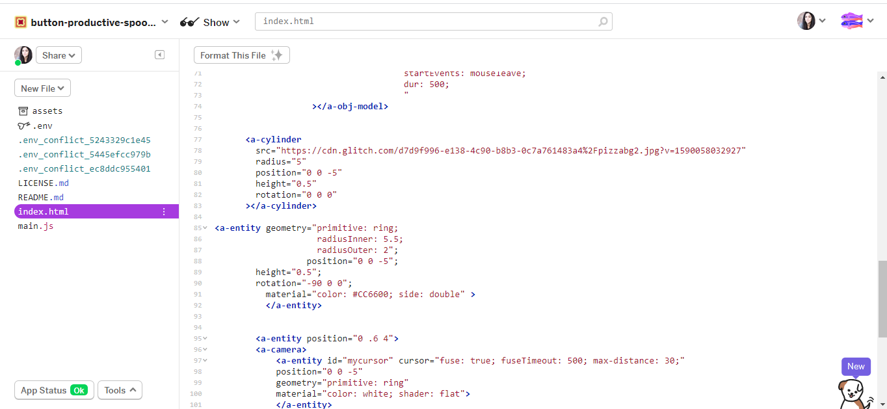

RESEARCH
I started my research by looking for general inspiring projects about Arduino. I mostly looked into artsy projects and was able to find a great amount of interesting material.
Putting The Pieces Back Together Again - ralf baecker
Artist’s website: https://rlfbckr.io/work/ptpbta/ Project video: https://www.youtube.com/watch?v=8GtFttw8z9U I always had strong interest for kinetic art installations, but it grew bigger only a few months ago, around September/October 2019, when I attended one of Today’s Art exhibitions in Den Haag called Putting the pieces back together by Ralf Baecker. Although it’s made with Raspberry Pi due to the huge number of inputs needed (over 1000), I think something similar could be made also with Arduino. What I love about this installation is that it drags its viewers into a dynamic world of constant movement and rearrangement. I love that all single tiny piece’s movement affects the rest of the installation, creating a sort of domino effect that never stops, and contrarily, evolves.
Khalil Klouche
https://www.klouche.com/- Laser Cabinet
– Monolith
Monolith Project video: https://vimeo.com/37853541
Laser Cabinet page: https://www.klouche.com/lasercabinet/
Khalil Klouche has a great portfolio containing projects all made with Arduino. Although his creations aren’t wearables, they’re a great source of inspiration and allow me to know how Arduino can be used and maybe applied to wearables later on.
The laser Cabinet is a playful invention where users can play with a piece of furniture. It’s good looking and innovative, and I’d love to build and possess something so cool in my own apartment. Other than the Arduino itself, also lasers, mirrors and stepper motors were included in the process.
Monolith is a very elegant art installation that activates only when gets touched on its surface. Once touched, it shows enchanting space visuals. In order to create this experience, the artist used both Arduino and Processing. I really love that Arduino can create an experience that makes its viewers feel completely immersed with just one touch.
Ikhsan Ismail - Eye Blink Controlled Light Switch
https://create.arduino.cc/projecthub/San_Ismail/eye-blink-controlled-light-switch-1febe6?ref=tag&ref_id=wearables&offset=6
After checking out some general creation made with Arduino, I started looking into wearables. https://create.arduino.cc/projecthub offers a huge updated list of projects (some professionals, some others less), made by passionate people who want to share their creations. One of them, who grasped my attention, was Ikhsan Ismail, who made glasses based on Shota Aizawa’s yellow goggles.
The glasses work this way: The light turns off when the person who’s wearing them blinks her/his eyes.
What I like about this project is the fact that it’s very amateur yet creative and fun. I’d like to create something similar and be able to deliver a playful experience to my users.
video: https://www.youtube.com/watch?v=3w_EYLou0uQ
TINKERING
DEMO 1:
I started off by familiarizing with an AR software called Spark AR. The tool allows to create AR effects for mobile cameras. My first idea was to create a pizza face filter as it sounded easy for a first-time user. To create the filter, I first downloaded Face Reference Assets. I then edited a face reference asset on Photoshop by adding a pizza shape and removing the are around the eyes and nose. It was then possible to upload the image into the software and position it on the right place.
 DEMO 2:
I wanted to boost my skills in the previously used software, Spark AR Studio, thus I looked for a way to create an interactive filter that would be also fun to use. The filter consists of a written question (Which HCI teacher are you?) and multiple answers (teacher’s picture). The answers are random and to create the experience I used the Patch Editor section, which required quite some time and a lot of tutorial-watching. I enjoyed incorporating a fun element into my demo, and it inspired me to create something fun for the next tinkering stages as well.

DEMO 3:
For this demo I decided to change software and I went for A-Frame, which was also used during the workshop. I created a pizza shape and placed it in the middle. I tinkered a bit with the sky tag changing images and colours around my main shape and changed some settings to familiarize with the tool as much as possible. I then decided to go one step forward and create my final challenge starting from this demo.

DESIGN AND BUILD
 
My challenge contains all my biggest passions: pizza, pizza and pizza. I started off by creating the pizza shape with a cylinder and its crust with a ring shape. I then added texture to it and made the “sky” a real pizza oven environment. On the top of the screen there are two ingredients: tomato and mozzarella. When you hover on them, you can add the ingredients to the pizza.

The experience I created contains the playful and fun element, but it also shows a different perspective, that can’t be experienced in real life. Through this VR experience, people can empathize with pizza and see the “world” (their environment) from a more closed-up view. Moreover, the challenge gives its users the freedom to play and choose what ingredient they want on the pizza. Isn’t that too much fun?
:D
More ingredients can be added, but that will come with new updates. (Of course, pineapple isn’t going to be an option)
REFLECT
AR VR technologies are reshaping the way humans see the world in all its aspects: arts, medicine, lifestyle and instruction, by adding engaging and interesting features to the world we already know, resulting in a whole new unique way of experiencing life. I believe both AR and VR are changing the world for the better, allowing people to go beyond their creativity limits and to explore customizable and interactive worlds that can be fed by our own imagination. What is real and what is unreal? Well, I think nowadays, with the latest innovations in AR and VR, we can easily say that nothing is unreal anymore, while everything can be possible and real as long as users experience it. I like to think that AR and VR will enhance everyone’s lives and help fighting depression, loneliness, boredom by creating worlds where the user’s view is the only perspective that really matters.
I start off by saying that I’m a complete noob with programming and it often frustrates me not being able to transfer what I have on my mind into codes. However, I found it engaging to create something simple yet playful and dynamic. My final concept represents what I most like about VR: the non-human perspective. In the experience I created, you’re a tiny creature inside an oven who can throw some mozzarella and tomato at the pizza, while exploring the insides of an oven, which is something new for me, as human. Pizza world could be a whole new concept and I’m already thinking of multiple new ways and settings I want to create based on this game as I love seeing how different the world is when you’re a new kind of entity.
Learning, tinkering and creating experiences with A-Frame was very time consuming and frustrating especially in the first stages. But over the time, when I finally familiarize with its language, it became more natural to me and it became fun and engaging. I surely want to learn Unity and Unreal, to be able to compare the three software and see how different the outcomes could be when using different tools with different languages. What I found tough while working with A-Frame, is the fact that documentation and tutorials are very difficult to find, which sets limits to the possibilities one can take when designing. Other than A-Frame, I used Spark AR during my tinkering phase, and it was an amazing experience for the simplicity of its interface and for the diverse functionalities that it provides its users with.
Overall, I had a lot fun using this software and what I learnt from it is that knowledge and skills are essential, yes, but creativities and ideas are the most valuable requirements when it comes to create AR and VR content. In other words, while working on this challenge I finally realized that regardless my skill level, I can create a fun and good-looking experience and it motivated in a way that I’m not looking forward to to boosting my abilities in this field.